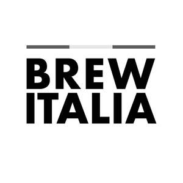

Trade Mark Journal No.2025/050 12 December 2025
UK00004303681 1 December 2025 (11,30)

- Class 11
- Automatic installations for making coffee; Coffee bean roasting machines; Coffee brewers, electric; Coffee capsules, empty, for electric coffee machines; Coffee filters, electric; Coffee machines; Coffee machines incorporating water purifiers; Coffee machines, electric; Coffee makers; Coffee makers, electric; Coffee percolators, electric; Coffee roasters; Coffee roasting machines; Coffee roasting ovens; Coffee pots, electric; Electric apparatus for making coffee; Electric coffee brewers; Electric coffee filters; Electric coffee machines; Electric coffee makers for household use; Electric coffee making machines; Electric coffee percolators; Electric coffee pots; Electric coffee roasters; Electric coffee urns; Electric espresso machines; Electric wireless coffee pots; Electrical coffee pots; Electrical coffee pots incorporating percolators; Espresso coffee machines; Filters (Coffee -), electric; Nitrogen coffee machines, electric; Refillable coffee capsules; Roasters(Coffee -).
- Class 30
- Aerated beverages [with coffee, cocoa or chocolate base]; Aerated drinks [with coffee, cocoa or chocolate base]; Artificial coffee; Barley for use as a coffee substitute; Beverages (Coffee-based -); Beverages based on coffee; Beverages based on coffee substitutes; Beverages consisting principally of coffee; Beverages made from coffee; Beverages made of coffee; Beverages with a coffee base; Beverages with coffee base; Caffeine-free coffee; Chicory [coffeesubstitute]; Chicory and chicory mixtures, all for use as substitutes for coffee; Chicory based coffee substitute; Chicory extracts for use as substitutes for coffee; Chicory for use as substitutes for coffee; Chicory mixtures for use as substitutes for coffee; Chicory mixtures, all for use as substitutes for coffee; Chocolate bark containing ground coffee beans; Chocolate coffee; Coffee; Coffee [roasted, powdered, granulated, or in drinks]; Coffee bags; Coffee based beverages; Coffee based drinks; Coffee based fillings; Coffee beans; Coffee beverages; Coffee beverages with milk; Coffee capsules, filled; Coffee concentrates; Coffee drinks; Coffee essence; Coffee essences; Coffee essences for use as substitutes for coffee; Coffee extracts; Coffee extracts for use as substitutes for coffee; Coffee flavorings; Coffee flavorings [flavourings]; Coffee flavourings; Coffee in brewed form; Coffee in ground form; Coffee in whole-bean form; Coffee mixtures; Coffee oils; Coffee substitutes; Coffee substitutes (Vegetal preparations for use as -); Coffee substitutes [artificial coffee or vegetable preparations for use as coffee]; Coffee substitutes [grain or chicory based]; Coffee, teas and cocoa and substitutes therefor; Coffee-based beverage containing milk; Coffee-based beverages; Coffee-based beverages containing ice cream (affogato); Decaffeinated coffee; Drip bag coffee; Extracts of coffee for use as flavours in beverages; Extracts of coffee for use as flavours in foodstuffs; Filled coffee capsules; Filters in the form of paper bags filled with coffee; Flavoured coffee; Freeze-dried coffee; Ground coffee; Ground coffee beans; Ice beverages with a coffee base; Iced coffee; Instant coffee; Malt coffee; Malt coffee extracts; Mixtures of chicory for use as coffee substitutes; Mixtures of chicory for use as substitutes for coffee; Mixtures of coffee; Mixtures of coffee and chicory; Mixtures of coffee and malt; Mixtures of coffee essences and coffee extracts; Mixtures of malt coffee extracts with coffee; Mixtures of malt coffee with cocoa; Mixtures of malt coffee with coffee; Powdered coffee in drip bags; Preparations for making beverages [coffee based]; Preparations of chicory for use as a substitute for coffee; Prepared coffee and coffee-based beverages; Prepared coffee beverages; Roasted barley and malt for use as substitute for coffee; Roasted coffee beans; Sugar-coated coffee beans; Unroasted coffee beans; Vegetable based coffee substitutes; Vegetal preparations for use as coffee substitutes.
AND CO. BRANDS LTD